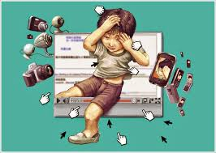

CyberBullying: Ameaça
A ameaça no contexto do cyberbullying refere-se ao ato de intimidar ou coagir alguém através de mensagens ou ações digitais, com a intenção de causar medo, angústia ou angústia emocional. Esse tipo de comportamento é considerado uma forma de violência e pode ocorrer em várias plataformas online, como redes sociais, aplicativos de mensagens, jogos online e e-mails.
O que é Ameaça no Cyberbullying?
Ameaçar alguém no ambiente digital implica em comunicar uma intenção de causar dano, seja físico, emocional ou reputacional, por meio de palavras, imagens ou vídeos. As ameaças podem ser explícitas (onde o agressor declara claramente a intenção de fazer mal) ou implícitas (sugerindo que um dano pode ocorrer).
Exemplos Comuns de Ameaça no Cyberbullying
Mensagens Diretas: Um usuário envia mensagens diretas a outro, dizendo que fará mal à pessoa se ela não fizer o que ele quer, como "Se você não me der seu dinheiro, eu vou te machucar".
Postagens em Redes Sociais: Alguém faz uma publicação no Facebook ou Instagram ameaçando a vítima, como "Eu vou acabar com você" ou "Cuidado, você vai se arrepender de me desafiar".
Ameaças em Grupos de Mensagens: Em um grupo de WhatsApp, um membro ameaça outro com violência física, dizendo que irá "bater" ou "ferir" a pessoa.
Imagens ou Vídeos Ameaçadores: Enviar fotos ou vídeos que insinuem violência, como imagens de armas, com a intenção de intimidar a vítima.
Doxing: Ameaçar expor informações pessoais da vítima, como endereço, número de telefone ou informações financeiras, caso ela não se conforme com as exigências do agressor.
Como Proteger-se de Ameaças Online
Documentar Ameaças: Mantenha registros de qualquer ameaça recebida, como capturas de tela de mensagens ou postagens. Isso pode ser útil para futuras ações legais.
Denunciar a Plataforma: Utilize as ferramentas de denúncia disponíveis nas redes sociais ou aplicativos para reportar ameaças. A maioria das plataformas leva essas questões muito a sério e pode tomar ações contra o agressor./p>
Bloquear o Agressor: Se possível, bloqueie o usuário que está fazendo ameaças para evitar futuras interações.
Buscar Ajuda Profissional: Se você se sentir inseguro ou em perigo, é importante procurar apoio psicológico e, se necessário, orientação legal.
Educação e Conscientização: Promover a educação digital e conscientizar amigos e familiares sobre os perigos do cyberbullying e como reconhecer e combater ameaças.
Conclusão
As ameaças no cyberbullying são um problema sério que pode causar danos significativos à vida de uma pessoa. É fundamental reconhecer a gravidade dessas ações e entender que existem recursos legais e comunitários disponíveis para proteger as vítimas. A prevenção e a educação sobre o uso responsável da internet são essenciais para criar um ambiente online mais seguro e respeitoso.
Relacionados

Casos de cyberbullying estão mais frequentes porque agressores sentem-se seguros no ambiente digital
Visitar página